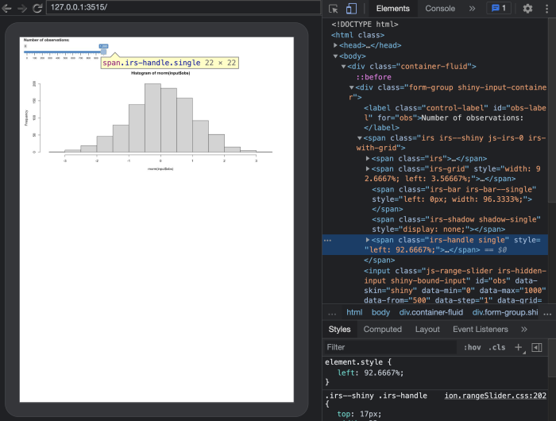

Monkey (headless) testing with {shinytest2}
Most people will use shinytest2 with the plug and play
record_test() app, which is very convenient if you are not
familiar with JavaScript. Under the hood, record_test()
generates an R script composed of a series of directed instructions that
manipulates the app to automate testing on CI/CD environments.
Monkey testing, a type of testing where random inputs are used to test the behavior of an app, is widely used by web developers to check application robustness, particularly in apps with a large number of inputs. The goal is ultimately to try to break the app by triggering unexpected combinations. Most available libraries are JS-based such as gremlins.js, traditionally combined with JS-based global testing libraries like Puppeteer, but can work with shinytest2 as well.
In this vignette we’ll provide a more thorough overview of the
AppDriver R6 class (extending on the concepts covered in
the Testing in depth article), which allows
the developer to programmatically control the app. We’ll see how we can
seamlessly benefit from gremlins.js with only few lines of code.
Initialize the driver
We consider a simple app composed of a slider and a plot output:
ui <- fluidPage(
sliderInput("obs", "Number of observations:",
min = 0, max = 1000, value = 500
),
plotOutput("distPlot")
)
# Server logic
server <- function(input, output) {
output$distPlot <- renderPlot({
hist(rnorm(input$obs))
})
}
# Complete app with UI and server components
shinyApp(ui, server)The driver may be initialized with:
headless_app <- AppDriver$new(
app_dir = "<PATH_TO_APP>",
name = "monkey-test",
shiny_args = list(port = 3515)
)Note the shiny_args slot allowing you to pass custom
options to shiny::runApp() such as the port, which might be
useful if your organization restricts port number.
load_timeout defaults to 10s and 20s locally and during
CI/CD, respectively. Therefore, if your app takes longer to launch, you
can change this value. Keep in mind that an app taking more than 20s to
launch is generally under-optimized and would require specific care such
as profiling and refactoring.
AppDriver starts a Chrome-based headless browser. If you need specific flags that are not available by default in shinytest2, you can pass them before instantiating the driver:
chromote::set_chrome_args(
c(
chromote::default_chrome_args(),
# Custom flags: see https://peter.sh/experiments/chromium-command-line-switches/
)
)Some flags are considered by default, particularly
--no-sandbox, which is applied only on CI/CD, as Chrome
won’t start without it.
If you run this script locally, you may add view = TRUE
to open the Chrome Devtools, which will significantly ease the testing
calibration. I highly recommend creating the test protocol locally and
then moving to CI/CD later when all bugs are fixed.
In the below figure, the application is shown on the left side panel. The top-right side panel shows the DOM elements (default) and the bottom-right side panel displays the JavaScript console output.

Injecting gremlins.js
The next steps consist of injecting the gremlins.js dependency in the DOM so that we can unleash the horde.
Easy way
The easiest way to inject gremlins.js is to call:
headless_app$run_js("
let s = document.createElement('script');
s.src = 'https://unpkg.com/gremlins.js';
document.body.appendChild(s);
")This creates a <script> tag pointing to the
correct Content Delivery Network (CDN), an optimized server to store
libraries, and inserts it at the end of the body.
To test whether everything worked well, we can dump the DOM and look
for the scripts. We can find gremlins.js by calling
typeof window.gremlins, which returns an object:
headless_app$get_html("script", outer_html = TRUE)
headless_app$get_js("typeof window.gremlins")You may instead see undefined returned. This is
generally because the JS code is blocked by the network. If this is the
case, consider injecting gremlins.js locally, as explained in the next
section.

Local way
You can store and serve a local copy of the gremlins.js script with
shiny::addResourcePath(), assuming gremlins.js
is in inst/js/gremlins.min.js. You can accomplish this by
adding the following code to the app.R file:
shiny::addResourcePath("gremlins", "inst/js/gremlins.min.js")We can subsequently inject the gremlins in the DOM and check whether everything worked as expected:
headless_app$run_js("
let s = document.createElement('script');
s.src = './gremlins/gremlins.min.js';
document.body.appendChild(s);
")
headless_app$get_html("script", outer_html = TRUE)
headless_app$get_js("typeof window.gremlins")Unleash the horde
A bit about gremlins.js
The workflow is rather simple:
- We create the horde with
gremlins.createHorde(). - We run the monkey test with
horde.unleash();.
createHorde() accepts many species of gremlins capable
of handling various events such as clicks, touch, form filling,
scrolling, typing, and more, as described in the gremlins.js documentation.
We don’t recommend using the scroller, which sometimes
crashes
the Chrome instance.
If your plots rely on random elements, such as rnorm, it
is best practice to set up a seed using set.seed(). By
default, all species will attack in random order with a delay of 10 ms
between each event. You can also control the attack strategy to fine
tune the global behavior. If you want more control over what your
gremlins species should be doing, you can define a custom species.
Practice
Blind run
In the following, we run the most basic monkey test configuration:
headless_app$run_js("gremlins.createHorde().unleash();")The result is shown in the GIF below:

Optimized testing
Does it really makes sense to invoke all species given we only have a slider? Absolutely not! We can use the following code to test only the slider input.

The best species to perform this task is the toucher,
which is able to randomly move the slider input. The documentation
specifies many events such as tap, doubletap, gesture and multi-touch.
It seems more relevant to apply only gesture, consisting of dragging the
slider on the x-axis (note: gesture also considers the y-axis, which
does not make sense for the slider. While this is a gremlins.js
limitation, it won’t prevent our test from running).
We target the slider handle by its class,
irs-handle single, to ensure we don’t touch any other
element. We also increase the number of maximum touches from 2 to 200.
Note the HTML inspector, which allows us to seamlessly inspect and
extract any class or id. The log parameter enables
logging in the JavaScript console:
const customToucher = gremlins.species.toucher({
// which touch event types will be triggered
touchTypes: ['gesture'],
// Touch only if element has class irs-handle single
canTouch: (element) => element.className === 'irs-handle single',
log: true,
maxTouches: 200
});We can create our custom horde and disable the FPS and Alert mogwais gremlins since they are not relevant to our case study:
const horde = gremlins.createHorde({
species: [customToucher],
mogwais: [gremlins.mogwais.gizmo()]
});As unleash is a promise, we can execute
a function right after it, in order to check whether the script ran as
expected.
If you are running on CI/CD and can’t see the Chrome Devtools, you
can still display the logs. The console.log output will be
captured by the shinytest2 logs with
headless_app$get_logs() allowing you to debug and refine
the monkey testing script.

As monkey testing lasts about 10s, you often want to take a screenshot of the ongoing attack:
headless_app$run_js("
const customToucher = gremlins.species.toucher({
// which touch event types will be triggered
touchTypes: ['gesture'],
// Touch only if element has class irs-handle single
canTouch: (element) => element.className === 'irs-handle single',
log: true,
maxTouches: 200
});
gremlins.createHorde({
//randomizer: new gremlins.Chance(1234), // repeatable
species: [customToucher],
mogwais: [gremlins.mogwais.gizmo()]
}).unleash().then(() => {
console.log('Gremlins test success')
});
")
Sys.sleep(3)
headless_app$get_screenshot("gremlins.png")
Should you run multiple attacks, it is always good practice to reset Shiny inputs between attacks, or even close the current headless app and restart a new session:
headless_app$set_inputs(obs = 500)If you run on CI/CD, don’t forget to clean the session after tests
are completed, particularly if you set the shiny.port
option, as you can’t have 2 apps running on the same port:
headless_app$stop()